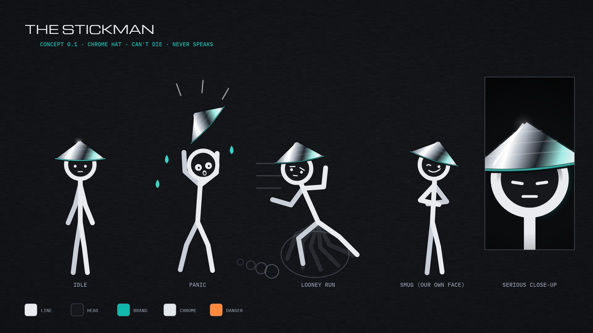

On 1 February 2027 YouTube doubles the watch-time bar for new channels. This is the plan to get channels monetised before then without making slop: the rules that decide who gets paid, what actually performs, the next five videos, your stickman, the channel stack, and a voice section with lines for you to read and gaps for your own jokes. Anything you type in the yellow boxes saves for the next session.
1,000 subscribers plus 4,000 public watch hours in 12 months, or 10M Shorts views in 90 days.
1,000 subscribers plus 8,000 watch hours, or 20M Shorts views in 90 days. Double.
Channels already in keep their place. Shorts ad money needs 10M Shorts views per 90 days; long-form keeps earning either way.
Reported enforcement: mass-AI channels removed in waves, and repeat offenders get a warning, then a 90-day suspension, then removal from the Partner Program.
Nobody has published a study comparing crazy and mild hypotheticals. The evidence on viral video points one way: a premise has to be extreme or outlandish to travel, and it only keeps travelling if the payoff is real. YouTube now ranks mostly on satisfaction, so a video people rate "worth my time" beats a longer one they sat through.
From creator-analytics trackers, not YouTube's own docs, so treat the weights as reported.
Each gets a long 16:9 cut for watch hours and a vertical cut for discovery. Facts marked [check] come from news summaries and get verified before posting.
1848: the richest man in the gold rush sold the shovels. Clay & Jones (2008) found the miners' gains were small or even zero, and everyone else's were positive and large. The shovels of 2026 are setup, trust and walking in the door. It ends on your takeaway pitch as the example.
In 2021 a car company announced a humanoid robot, and the robot on stage was a man in a spandex suit. In 2025 humanoids boxed on Chinese state TV. On 18 Sep 2026 a man got in a cage with a six-foot robot in San Francisco. Then the military part: armed robot dogs, ground robots in Ukraine. [check]
The helpful-AI episode: what an agent can actually do for you tonight while you sleep, following EP01's 16-hour horizon. Five real jobs handed over live, with timings and costs on screen, and the ones it fucked up left in.
Plans to put AI chips in orbit, where the sun never sets. Mills followed rivers, computers follow energy. The big what-if: who owns sunlight? The most visual one on the list, built for the holo style. [check]
In a 2025 study people picked the AI as the human more often than the actual human. How to tell online now, what Turing really asked in 1950, and a world where any voice could be synthetic. [check]
A hypothetical, played for laughs, with real advice underneath. It stars the stickman below. It's his own channel's launch video, or it can go out on The Curve if you'd rather stay on one channel for now.
Logline: a stickman with the powers of a god and zero self-control drops into history's worst moments and tomorrow's craziest hypotheticals, messes about, and somehow you come out knowing how to survive them.
lab/vo/ (on GitHub: Add file, then Upload files, on the claude/lucid-archimedes-77tqpt branch). I take it from there.ELEVENLABS_API_KEY (the cloud environment menu in the session's title bar, then Edit), and allow api.elevenlabs.io under Network access. A new session picks it up. Then you just upload raw takes and I convert, clean and cut them.I generated a test beach in your Canva and it came out well, but this environment can't download full-size images from Canva, so I only got a thumbnail. Two ways round it. Either generate these in Higgsfield or Canva and upload them to lab/plates/. Or allow export-download.canva.com and media.canva.com under Network access and I'll make and pull them myself. Make each one twice: the full scene, and the thing he hides behind on its own (a transparent PNG from background removal).
A main character who can't die, so the most dangerous stuff on Earth can be a joke while the advice stays real. He never speaks. You narrate, he reacts, and sometimes he ignores you completely.

Troll face warning: the original Trollface is copyrighted and its creator has collected licensing fees and had a game pulled over it. We draw our own smug face instead, which is also better for owning the character.
| Beat | What you say | What he does |
|---|---|---|
| Cold open | "World War Three. Hypothetically. Nobody panic." | Already panicking, hat on fire. |
| Go in | UK advice for a radiation emergency: get inside a proper building, go to the middle, away from windows. | Hides in the shed, the car, then a bin, before the house. |
| Stay in | Shut doors and windows and stay put. | Keeps opening the door to check if it's over. |
| Tune in | Radio, TV, your council's website. "Go in, stay in, tune in" is the actual government line. | Tunes into a cooking show, takes notes. |
| The kit | Three days of water and food, tin opener, wind-up radio, torch, batteries, first aid, documents. | Packs the kit, then a second bag of snacks, then a lamp. |
| The mind | Why panic kills more plans than bombs do, and what calm looks like. | The serious close-up. |
| Close | What to do tonight in ten minutes. One question for the comments. | Asleep in the hat. |
Two personal channels in your voice and style, and three money channels in niches that pay well and aren't on YouTube's sensitive list for AI narrators. Rough ad earnings per 1,000 views are from 2026 creator surveys and vary a lot by audience country.
| Channel | What it is | Voice | Why it pays | By 1 Feb |
|---|---|---|---|---|
| 1 · The Curve | AI and tech moving fast: Six Floors episodes, robots, agents, space compute. | George, plus your specials | Tech audiences pay mid to high. AI-tool affiliates. | 4,000 h |
| 2 · The stickman | Crazy hypotheticals with real survival and world knowledge: WW3, blackout, AI takeover, alien contact. | You | Huge reach, merch (the hat), affiliate survival kits. | 4,000 h |
| 3 · AI for small business | Practical AI setups for shops, takeaways, trades. Tutorials and honest tool reviews. Feeds your walk-in business. | You on screen-recordings, or George | AI tools and software reviews are among the best-paying faceless niches ($8–25 per 1,000). Affiliates. | 4,000 h |
| 4 · How It's Built | Megaproject and engineering documentaries, 12–20 minutes. Tunnels, dams, the deepest hole, the biggest machine. | George | Long watch time fills the hours fastest. The holo style is made for it. | Launch |
| 5 · How They Make Money | Business breakdowns: how a company, an app or a scam actually earns. Stories, never personal advice. | You, since it sits near finance | Business audiences are near the top of ad rates. Not advice, so not a sensitive topic. | Launch |
Connecting…
George is back as the narrator. The same passage at the old pace and two faster ones is below: pick the one that sounds like a man with too much to say and no trouble saying it. The writing does the rest: quick, precise, dry, well read, and swearing where it lands. I write the setups and leave the punchlines to you, marked in yellow.
EP01 and EP02.
Tighter gaps, same warmth.
Barely stops for breath.
Four short pieces in the new voice. Read them into the voice changer, or just out loud, to find the character. The yellow boxes are setups where a real person's punchline beats mine. Mine is underneath as a fallback. Type yours and it saves.
1848. San Francisco. A shopkeeper called Sam Brannan walks down the street holding up a bottle of gold like he's just won the bloody Champions League. The whole city loses its mind.
Mine: "Sailors walked off ships. Bakers walked out of bakeries. One bloke probably walked out of his own wedding." [check the ships]
And Sam? Sam had already bought up the pans. And the shovels. Nine weeks later he'd made thirty-six thousand dollars. He never dug for gold. Not once. Not one fucking scoop.
Mine: "In 1848 money, that's not rich. That's buy-the-street rich."
Delivery: quick and amused, like you've told this story at the pub and it still gets you. Hit "not one fucking scoop" dead flat.
Right. So in 2021 a car company announces it's building a humanoid robot. Big stage, lights, the works. And the robot comes out… and it's a bloke. In a spandex suit. Doing the robot.
Mine: "Somewhere there's a CV that says 'humanoid robot, 2021' and it's technically true."
Five years later, humanoids are boxing each other on Chinese state telly, and last week in San Francisco a man climbed into a cage with a six-foot robot. On purpose.
Mine: "I've had bad ideas, but I've never had a bad idea with a referee."
And somewhere, right now, a robot dog is having an anti-tank missile bolted to its back. Which, I think we can all agree, is a lot of dog. [check]
Delivery: slow, curious, a bit amazed, tangents allowed. Let the pauses sit. This one's you, so don't copy my rhythm.
World War Three. Hypothetically. Nobody panic.
Mine: "Nobody except him. He's been panicking since 2019."
Step one: go in. Not the shed. Not the car. A proper building, the middle of it, away from the windows. Step two: stay in. Doors shut, windows shut. Step three: tune in. Radio, telly, your council's website. That's the actual UK government advice: go in, stay in, tune in.
Mine: "He's gone in. He's gone into the fridge. Technically he's inside something."
Delivery: quick, urgent, a news-reader who's slightly losing it. Deadpan on the real advice so it lands as real.
The cheapest AI on Earth can now read eight novels for under ten pence.
Mine: "It took me a whole term to read Of Mice and Men, and I still think it was about rabbits."
So when reading is basically free, everything that used to need a clever person and an afternoon now needs neither.
Mine: "Which is great news, unless you're a clever person with an afternoon."
The full script is written in the new voice. These are the seven places where your line goes in. Leave one empty and mine stays. A draft with my lines is rendering now so you can hear the pace; when you've filled these, I re-voice and re-render.
After: "Nine weeks later, he'd made thirty-six thousand dollars."
Mine: "In 1848 money. That's not rich. That's buy-the-street rich."
After: "For the miners, the gains were small, or even zero. For everyone else, positive, and large."
Mine: "Economists. Taking a hundred and sixty years to confirm what Sam worked out in an afternoon."
After: "Now look at 2026. Everyone's digging for the same gold again. Apps. Agents. Startups."
Mine: "Every one of them with a pitch deck that says revolutionary on slide one."
After: "It doesn't need a startup. It needs someone who knows what the tools can do, and has the bollocks to walk in the door."
Mine: "That's the shovel. It's not glamorous. Neither was a shovel."
After: "About a third of the track they approved never got built. Then the bubble burst."
Mine: "Turns out you can't ride a train on a share certificate."
After: "Next door, a repair shop for AI agents that have gone a bit feral. A tailor who fits a model to one family, like a suit."
Mine: "And a support group for people whose fridge has started giving them life advice."
After: "Tonight's homework: walk past three shops, and write down one job each of them still does by hand. That's your shovel list."
Mine: "Bonus points if the owner looks knackered. That's not a shop. That's a customer."
The robots one is an outline to talk through, not a script: the facts go on screen, and you say it however it comes out. The WW3 guide is a full read, because the stickman's gags are timed to your words. Change anything. Lines marked [check] get verified before either goes out.
Open (read this): In 2021 a car company unveiled its humanoid robot, and the robot on stage was a man in a spandex suit. Five years later robots are boxing on Chinese state telly, a bloke just fought one in a cage in San Francisco, and someone's bolting missiles onto a robot dog. So how the fuck did we get here?
| Chapter | On screen (facts) | Talk about |
|---|---|---|
| 1 · The suit | Tesla AI Day, Aug 2021: a person in a white bodysuit and black helmet did a robot dance to introduce "Tesla Bot". | Your honest first reaction. What it says about hype. Would you have bought shares? |
| 2 · Cheap before clever | Unitree G1, unveiled May 2024: $16,000, 1.27 m tall. Chinese makers shipped most of the world's humanoids in 2025 [check the share]. | Robots got cheap before they got clever. What happens when a humanoid costs the same as a used car? |
| 3 · Fight night | May 2025: humanoids box in Hangzhou, on China's state TV, steered by people with controllers. 18 Sep 2026: REK puts a human kickboxer in a cage with a six-foot robot in San Francisco, and plans a US tour in November [check dates]. | Would you fight one? What is a sport where the athlete can be rebuilt overnight? Who's the real fighter, the robot or the person with the controller? |
| 4 · The one in your kitchen | 1X NEO: $20,000, or $499 a month. Early ones get help from a remote human when they're stuck. | A stranger's hands inside your robot. Would you let it hold a knife? Would you let it near your nan? |
| 5 · The part nobody laughs at | Sep 2026: Serbia shows robot dogs with anti-tank missiles and rifles. A Chinese firm showed a missile-carrying robot dog at a defence show in Feb 2026. Ukraine logged 7,000+ ground-robot missions in January 2026 [check all three]. Cheap drones, not humanoids, changed that war most. | Let the tone drop. Slow down. "Which is, I think we can all agree, a lot of dog." When a robot dog pulls a trigger, who pulled it? |
| 6 · Stoned philosophy | Slow ASCII drift, no facts, just the questions. | Would you rather be replaced by a robot or managed by one? If it wins the fight but a human steered, who won? Does it matter if it feels anything? |
Close (read this): In 2021 the robot was a bloke in a suit. In 2026 the bloke's in the cage and the robot's throwing the punches. Give it five years. I reckon the suit's on the other foot.
Record each chapter as its own take. Tangents are fine; I cut them to picture. Visuals: slow orbits of line-art robots, fight-night ASCII, a red map for the military part.
1 · Cold open. World War Three. Hypothetically. Nobody panic. [he's already panicking, hat on fire] Nobody except him.
2 · The alert. First, your phone screams. Every phone screams. The UK can send an emergency alert to every phone in an area, and it goes off even on silent. [he throws his phone in the fish tank; it keeps screaming, now with bubbles] Don't do that. Read it. It tells you what's happening and what to do.
3 · Go in. Get inside a proper building. Brick or concrete, not a shed. Go to the middle, away from windows. [shed, car, wheelie bin, fridge, each with a "wrong" buzzer] The middle of a house. Not the middle of a fridge.
4 · Stay in. Doors shut, windows shut, and stay put until you're told it's safe. [he keeps opening the door; each time something more ridiculous goes past: a cow, a tank, his ex]
5 · Tune in. Radio, telly, your council's website. If the internet goes, a wind-up or battery radio still works. Go in, stay in, tune in. That's the actual government line. [he's tuned into a cooking show, taking notes]
6 · The kit. Three days of water and food: tins, dried stuff, bottled water. A tin opener. A torch and a radio with spare batteries. First aid, your meds, copies of your documents, a charged power bank, some cash. [he packs it perfectly, forgets the tin opener, opens the beans with the hat; the hat works; the hat always works]
7 · Your people. Agree where you'd meet if phones go down. Write the important numbers on paper. Check on the old lady next door. [his paper list has one number on it: "Mum"]
8 · Your head. Panic spreads faster than anything else in a crisis. Slow breaths, one trusted source, and put the doomscroll down. [the serious close-up; the brim shades his eyes; a single dramatic sting]
9 · Tonight. Ten minutes: put a torch, a radio and a tin opener in one bag by the door. Step one, done. [he's asleep in the hat, in the bag]
Mine: "And if it all kicks off, remember: he survived, and he's got the IQ of a teaspoon."
Tone: fast, tense and funny, but the advice itself dead straight. Label it hypothetical in the title and the opening line, and keep the doom light, so it stays on the right side of YouTube's "off-putting" rule. Kit list from UK council guidance.
| When | What |
|---|---|
| Now → 11 Oct | Lock George's pace and your voice test. EP03 with your lines. Build the stickman and his rig. Open channels 2 and 3 (names, banners, the first long video each). |
| 12 Oct → 15 Nov | Two long videos a week across the three main channels, plus three Shorts from each. The robots video and the WW3 guide go out here. |
| 16 Nov → 31 Dec | Double down on whatever the analytics say is working, and a sequel to the best video on each channel. Channels 4 and 5 go live. |
| January | Push the channels closest to 4,000 hours: playlists, premieres, community posts. Apply the moment one qualifies. |
You said you've got ideas for other channels. Dump them here, rough is fine. They save, and I'll work them into the stack next session.